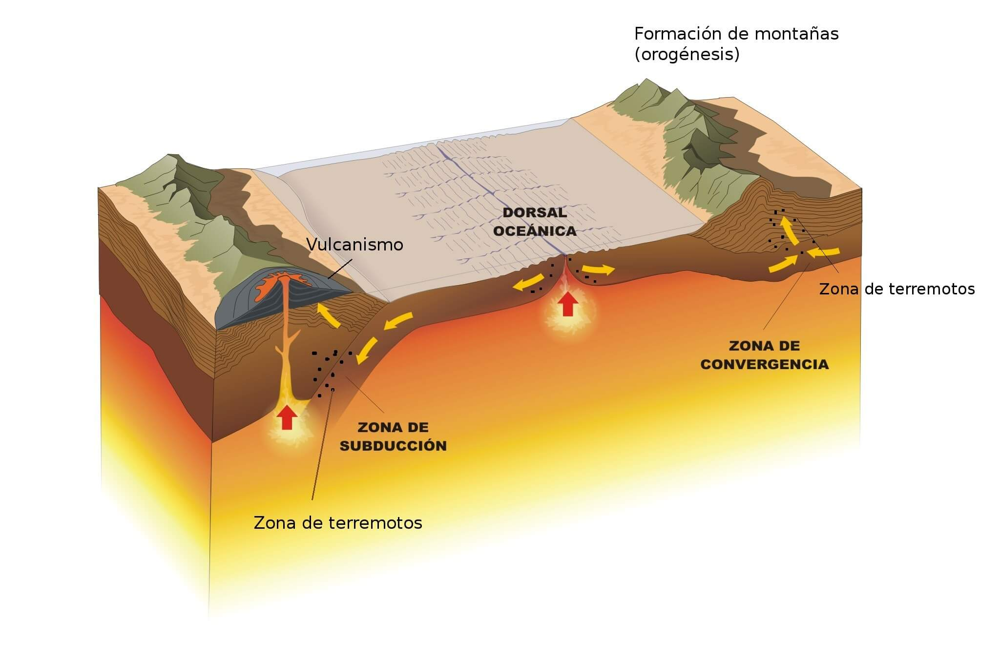

Cambio del relieve
El relieve terrestre ha ido y continúa cambiando fundamentalmente por dos razones: Por la acción de agentes internos como las fallas, los terremotos y los volcanes. Y por los agentes externos como el agua, el viento, la vegetación y la acción de los seres humanos.
